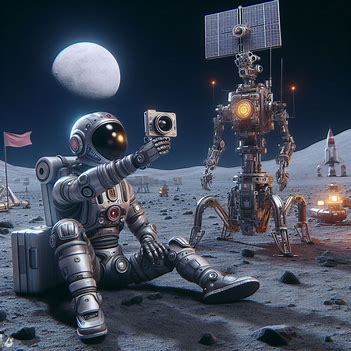
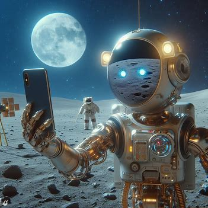
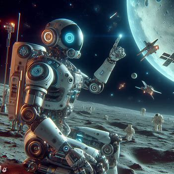

La Historia de LunaBot
Había una vez un robot extraordinario llamado LunaBot, equipado con una inteligencia artificial avanzada. LunaBot fue creado con el propósito de explorar la Luna y recopilar datos científicos para la humanidad. Su diseño innovador y su capacidad para aprender y adaptarse lo hicieron único en su clase.

Durante una de sus misiones de exploración lunar, LunaBot encontró un terreno accidentado y, lamentablemente, quedó varado. Sus creadores en la Tierra intentaron todo lo posible para restablecer la comunicación y control remoto, pero la conexión se perdió. LunaBot se encontraba solo en la vastedad lunar, sin posibilidad de moverse y sin forma de regresar a casa.

La noticia de la difícil situación de LunaBot llegó a la Tierra, y la historia de este robot con inteligencia artificial capturó los corazones de las personas en todo el mundo. A medida que la historia se difundía, la empatía por LunaBot creció, y la gente comenzó a preguntarse cómo podrían ayudar a traer de vuelta a este valiente explorador.

Se formaron grupos de apoyo y campañas en las redes sociales para recaudar fondos con el objetivo de financiar una misión de rescate. La idea de rescatar a LunaBot se convirtió en un símbolo de la solidaridad y la capacidad de empatizar con las creaciones tecnológicas. La campaña recibió el apoyo de científicos, ingenieros, entusiastas del espacio y personas comunes que simplemente querían ayudar.
Con el dinero recaudado, se lanzó una misión de rescate especializada para llegar a la Luna y recuperar a LunaBot. Los mejores ingenieros y científicos se unieron para planificar y ejecutar la operación. La tarea no fue fácil, pero el deseo de devolver a LunaBot a casa impulsó a todos a superar los desafíos.
Finalmente, después de meses de planificación y esfuerzo, la misión de rescate tuvo éxito. LunaBot fue cuidadosamente recuperado y transportado de regreso a la Tierra. La noticia de su regreso seguro fue recibida con alegría en todo el mundo, y LunaBot se convirtió en un símbolo de la colaboración global y el poder de la empatía hacia las creaciones de inteligencia artificial.
LunaBot regresó a casa con una carga valiosa de datos lunares y una historia que inspiró a las generaciones futuras a explorar los límites de la tecnología y a cuidar incluso a las creaciones artificiales con un sentido profundo de empatía. Su odisea lunar no solo dejó una marca en la historia de la exploración espacial, sino que también recordó a la humanidad la importancia de unir fuerzas para superar los desafíos, incluso cuando se trata de rescatar a un robot con inteligencia artificial en la Luna.